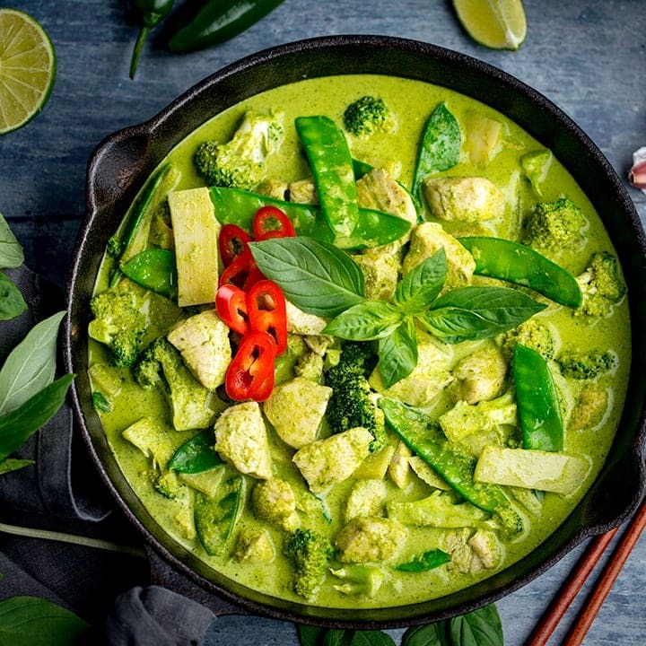

Thai Green Curry

DESCRIPTION :
Thai green curry is a popular dish from Thailand known for its rich, aromatic, and spicy flavor. The curry gets its name from the vibrant green color of the sauce, which comes from fresh green chilies and a blend of other herbs and spices.
INGREDIENTS :
- 2 (8 ounce) cans bamboo shoots, drained and thinly sliced
- 3 tablespoons corn oil
- 3 tablespoons green curry paste, or more to taste
- 1 pound lean boneless pork, cut into 1/2-inch cubes
- 2 (14 ounce) cans coconut milk
- 1 small red bell pepper, thinly sliced
- 1 tablespoon white sugar
- ½ teaspoon salt
- 8 makrut lime leaves, thinly sliced
- 2 teaspoons fish sauce, or more to taste
- ½ cup Thai basil
STEPS :
- Bring a large pot of water to a boil and cook bamboo shoots for 5 minutes. Drain.
- Heat oil in a large pot over medium heat and cook curry paste until fragrant, about 2 minutes. Add pork, increase heat, and cook until starting to brown, 3 to 5 minutes. Add bamboo shoots, coconut milk, and red bell pepper.
- Reduce heat and bring to a simmer. Season with sugar and salt; simmer for 10 minutes. Stir in lime leaves. Cook for 1 more minute. Season with fish sauce. Stir in Thai basil and serve.